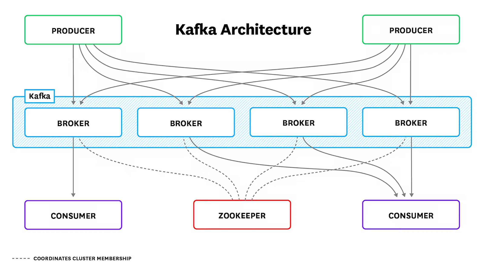
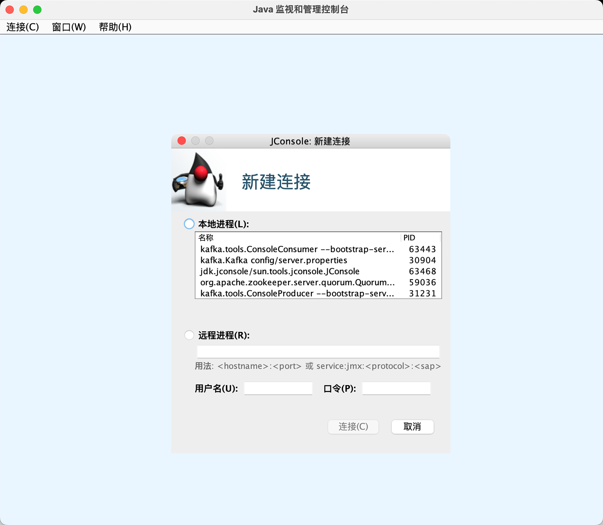
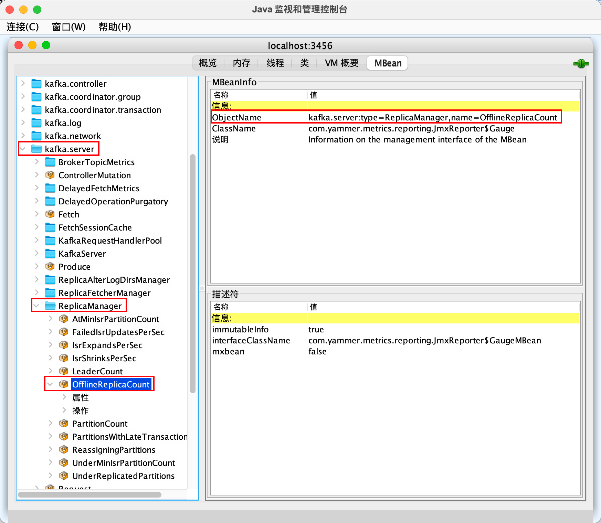
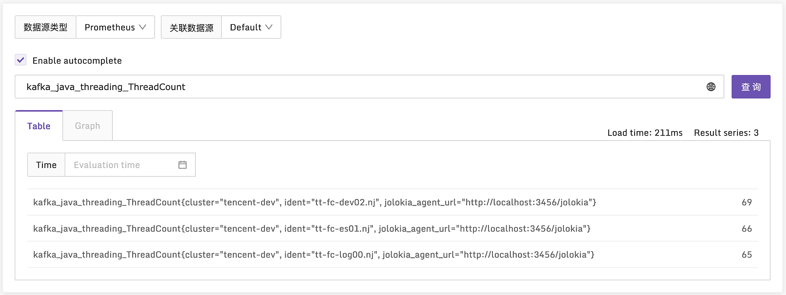
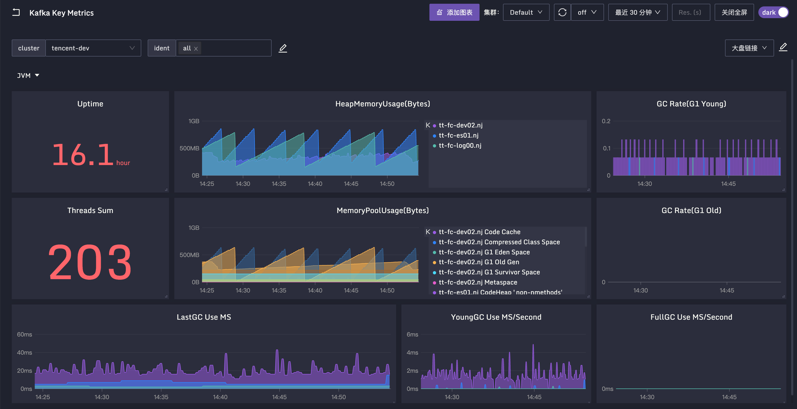
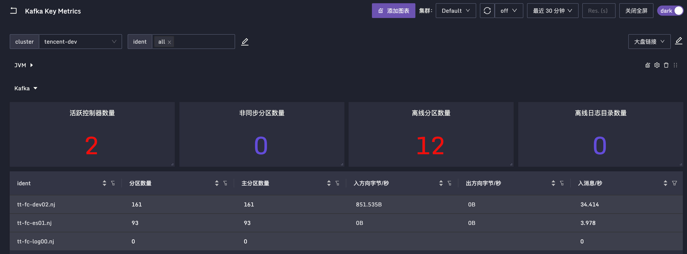

Kafka
MySQL 和 Redis 的监控，核心原理就是连到实例上执行特定语句命令拉取数据，类似的还有 MongoDB，这算是一类监控场景。Kafka 引出 JMX 监控场景，丰富你的数据采集工具箱。
要做好 Kafka 的监控，首先要了解 Kafka 的 基础概念，比如 Topic（主题）、Partition（分区）、Replica（副本）、AR（Assigned Replicas）、ISR（In-Sync Replicas）、OSR（Out-of-Sync Replicas）、HW（High Watermark）、LEO（Log End Offset）等等。其次是要了解 Kafka 的架构，通过架构才能知道要重点监控哪些组件，下面我们就先来看一下 Kafka 的架构图。
Kafka 架构

上面绿色部分 PRODUCER（生产者）和下面紫色部分 CONSUMER（消费者）是业务程序，通常由研发人员埋点解决监控问题，如果是 Java 客户端也会暴露 JMX 指标。组件运维监控层面着重关注蓝色部分的 BROKER（Kafka 节点）和红色部分的 ZOOKEEPER。
ZooKeeper 也是 Java 语言写的，监控相对简单，可以复用下面介绍的 JMX 监控方式，另外 ZooKeeper 支持 mntr 四字命令，可以获取 ZooKeeper 内部健康状况。新版 ZooKeeper 连四字命令都不需要了，直接内置暴露了 Prometheus 协议的 metrics 接口，直接抓取即可。
我们重点关注 Broker 节点的监控，也就是 Kafka 自身的监控，通常从四个方面着手。
- Kafka 进程所在机器的监控，重点关注CPU、硬盘I/O、网络I/O。
- JVM 监控，Kafka 是个 Java 进程，所以需要常规的 JVM 监控，通过 JMX 方式暴露。
- Kafka 自身的指标、也是通过 JMX 方式暴露，比如消息数量、流量、分区、副本的数量等。
- 各个 consumer 的 lag 监控，即消息堆积量，是各类MQ都应该监控的指标。
JVM 和 Kafka 相关的指标，都通过 JMX 方式暴露，我们就先来看一下什么是 JMX，以及 Kafka 如何开启 JMX。
JMX 简介
JMX（Java Management Extensions）是一个为应用程序植入管理功能的框架。Java 程序接入 JMX 框架之后，可以把一些类的属性和方法暴露出来，用户就可以使用 JMX 相关工具来读取或操作这些类。
比如一个类是 Person，有 Name 和 Age 两个属性，如果把 Person 做成一个 MBean，我们就可以在 JConsole里直接查到 Person 属性的值，也可以修改这些属性。
注：MBean被管理的Java对象，JConsole是JMX的一个管理工具。
我们可以通过 JConsole 直接操作 JavaBean，那JConsole 对 JavaBean来说是什么？
打个比方吧，其实就像是PHPMyAdmin 之于 MySQL，我们可以通过 PHPMyAdmin 直接操作数据库，这样说你大概能理解了吧。如果你没有理解也没关系，从监控的角度，我们只要知道如何通过 JMX 读取 Kafka 的指标即可。下面我们就来看一下 Kafka 如何开启 JMX 端口。
Kafka 开启 JMX
Kafka 的配置文件在 config 目录，各种脚本在 bin 目录，要让 Kafka 开启 JMX，肯定是要修改某个配置项或者调整某个脚本的，具体调整哪里呢？我们在 Kafka 的部署目录搜索一下看看。
grep -i jmx -r config
grep -i jmx -r bin
在 config 目录搜索 jmx 发现什么都找不到，看来不是通过配置文件来处理的。在 bin 目录下搜索 jmx，可以看到有两个脚本出现了这个关键字，一个是 bin/kafka-run-class.sh，另一个是 bin/windows/kafka-run-class.bat。显然 bat 结尾的文件是 Windows 环境的批处理文件，sh 结尾的才是 Linux、Mac 下使用的脚本文件。我本地是 Mac 环境，打开 kafka-run-class.sh 看一下里边的关键配置。
# JMX settings
if [ -z "$KAFKA_JMX_OPTS" ]; then
KAFKA_JMX_OPTS="-Dcom.sun.management.jmxremote -Dcom.sun.management.jmxremote.authenticate=false -Dcom.sun.management.jmxremote.ssl=false "
fi
# JMX port to use
if [ $JMX_PORT ]; then
KAFKA_JMX_OPTS="$KAFKA_JMX_OPTS -Dcom.sun.management.jmxremote.port=$JMX_PORT "
fi
...
# Launch mode
if [ "x$DAEMON_MODE" = "xtrue" ]; then
nohup "$JAVA" $KAFKA_HEAP_OPTS $KAFKA_JVM_PERFORMANCE_OPTS $KAFKA_GC_LOG_OPTS $KAFKA_JMX_OPTS $KAFKA_LOG4J_OPTS -cp "$CLASSPATH" $KAFKA_OPTS "$@" > "$CONSOLE_OUTPUT_FILE" 2>&1 < /dev/null &
else
exec "$JAVA" $KAFKA_HEAP_OPTS $KAFKA_JVM_PERFORMANCE_OPTS $KAFKA_GC_LOG_OPTS $KAFKA_JMX_OPTS $KAFKA_LOG4J_OPTS -cp "$CLASSPATH" $KAFKA_OPTS "$@"
fi
如果 KAFKA_JMX_OPTS 变量为空，就给它赋值，赋值的那一行内容，实际就是开启 JMX 的关键参数。如果 JMX_PORT 变量不为空，就再加上 -Dcom.sun.management.jmxremote.port 这个参数，通过某个端口暴露 JMX 数据，最后把 KAFKA_JMX_OPTS 放到启动命令里。
这就很清晰了，只要启动 Kafka 之前，在环境变量里嵌入 JMX_PORT 变量，Kafka 就会监听这个端口，暴露 JMX 数据，我们试试。
export JMX_PORT=3457; ./bin/kafka-server-start.sh config/server.properties
启动之后，检查 Kafka 的端口监听，就会发现除了原本监听的 9092 端口，现在也监听了 3457 端口，我们使用 JConsole 工具连上来看看。如果你之前安装过 JDK，直接在命令行里输入 jconsole 就能打开 JConsole 页面。

我们选择远程进程，输入 localhost:3457，然后点击连接，选择不安全的连接，就进入了 JConsole 主页面。默认进来是概览页面，我们选择 MBean，左侧就看到了一个树形结构的多个对象。举个例子，依次点击 kafka.server、ReplicaManager、OfflineReplicaCount，右侧会展示 MBeanInfo，里边尤其要注意的是 ObjectName，后面我们获取 JMX 数据的时候，会频繁用到这个属性。

OfflineReplicaCount 是 Broker 的一个关键指标，点击下面的属性，就可以看到具体的值。
通过 JConsole 的页面确实可以查到各个监控指标的数据，但真正和监控系统对接的话，还是需要使用编程的方式来获取。JMX 的端口走的是 RMI 协议，是Java独有的RPC协议，其他语言没法调用。好在有工具可以把它转为 HTTP 协议，常见的工具有两个，一个是 Prometheus 生态的 jmx_exporter_javaagent，一个是 Jolokia。Jolokia 也是个 JavaAgent，jmx_exporter 可以把 JMX 指标导出为 Prometheus metrics 格式，Jolokia 可以把 JMX 指标导出为 JSON 格式，差别不大。
不过 Kafka 暴露的 JMX 指标实在是太多了，如果不过滤全部导出，每个 Broker 轻轻松松就几万个JMX 指标，大型互联网公司的话，基本上都有几百个 Broker，这个量就有点儿大了。
过滤方式主要有两种，一种是过滤 MBean，通过白名单的方式指定，这些 MBean 采集的数据如果有些还不想要，就做二次过滤，通过黑名单的方式指定，比如根据指标名字做过滤。jmx_exporter 指定 MBean 过滤规则是通过一个配置文件实现的，如果这个配置文件发生变化，就要重启 Java 进程，动作有点儿重。
而 Jolokia 的过滤规则都可以在采集器 agent 侧实现，修改过滤规则只需要重启采集器即可，不需要重启要监控的 Java 进程，动作相对轻一些。所以我个人倾向使用 Jolokia。下面我们就来看一下如何为 Kafka 引入 Jolokia 支持。
Kafka 开启 Jolokia
首先下载 Jolokia 的 javaagent jar 包，解压到 /opt/jolokia 目录下。然后在 kafka-run-class.sh 找到 JMX 相关的配置，在 JMX_PORT 相关逻辑下面增加三行。
# JMX settings
if [ -z "$KAFKA_JMX_OPTS" ]; then
KAFKA_JMX_OPTS="-Dcom.sun.management.jmxremote -Dcom.sun.management.jmxremote.authenticate=false -Dcom.sun.management.jmxremote.ssl=false "
fi
# JMX port to use
if [ $JMX_PORT ]; then
KAFKA_JMX_OPTS="$KAFKA_JMX_OPTS -Dcom.sun.management.jmxremote.port=$JMX_PORT "
fi
########## adding lines
if [ "x$JOLOKIA" != "x" ]; then
KAFKA_JMX_OPTS="$KAFKA_JMX_OPTS -javaagent:/opt/jolokia/jolokia-jvm-1.6.2-agent.jar=host=0.0.0.0,port=3456"
fi
例子里的 3456 是 Jolokia 监听的端口，可以换成别的，只要别跟机器上的其他端口冲突就行。加了一个 JOLOKIA 变量的判断，如果这个变量不为空，就开启 Jolokia；如果变量为空就不开启，方便在外部控制。此时我们可以重新启动 Kafka。
export JOLOKIA=true; export JMX_PORT=3457; nohup ./bin/kafka-server-start.sh config/server.properties &> stdout.log &
验证 Jolokia 是否在正常工作，请求其 /jolokia/version 接口即可。下面是我的环境的请求示例，你可以看一下。
# curl -s 10.206.16.8:3456/jolokia/version | jq .
{
"request": {
"type": "version"
},
"value": {
"agent": "1.6.2",
"protocol": "7.2",
"config": {
"listenForHttpService": "true",
"maxCollectionSize": "0",
"authIgnoreCerts": "false",
"agentId": "10.206.16.8-2012615-50134894-jvm",
"debug": "false",
"agentType": "jvm",
"policyLocation": "classpath:/jolokia-access.xml",
"agentContext": "/jolokia",
"serializeException": "false",
"mimeType": "text/plain",
"maxDepth": "15",
"authMode": "basic",
"authMatch": "any",
"discoveryEnabled": "true",
"streaming": "true",
"canonicalNaming": "true",
"historyMaxEntries": "10",
"allowErrorDetails": "true",
"allowDnsReverseLookup": "true",
"realm": "jolokia",
"includeStackTrace": "true",
"maxObjects": "0",
"useRestrictorService": "false",
"debugMaxEntries": "100"
},
"info": {
"product": "jetty",
"vendor": "Eclipse",
"version": "9.4.43.v20210629"
}
},
"timestamp": 1669277907,
"status": 200
}
上面返回的内容表示 Jolokia 在正常工作，下面我们就可以使用监控 agent 来采集 Jolokia 的数据了。JMX 数据分两类，一类是和 JVM 相关的，一类是和 Kafka 相关的，我们先来看一下 JVM 相关的采集规则。
JVM 指标
Categraf 的配置目录 conf 下面，默认有一个 input.jolokia_agent_kafka 的目录，放置了 Kafka 的 Jolokia 拉取规则的样例。把 input.jolokia_agent_kafka 重命名为 input.jolokia_agent，然后修改此目录下面的 kafka.toml，重点关注 urls 和 labels 两个配置。
[[instances]]
urls = ["http://localhost:3456/jolokia"]
labels = { cluster = "kafka-cluster-demo" }
这里我建议你用 Categraf 采集本机的 Kafka，并为采集的数据附加一个名为 cluster 的标签。因为一个公司通常有多个 Kafka 集群，使用 cluster 标签可以做出区分。通过 test 参数测试一下采集的指标是否正常。
./categraf --test --inputs jolokia_agent
如果输出大量的指标，就说明采集逻辑是正常的，稍等片刻，重启 Categraf，再去监控系统查询一下，看看数据是否正常上报了。

我们看下图中的指标，ThreadCount 表示 JVM 里的线程数，类似的还有 DaemonThreadCount，表示后台线程数，PeakThreadCount表示历史峰值线程数。JVM 要重点关注 GC 的情况和内存的情况，我们看下相关指标。
GC 主要看次数和时间，分为 YongGC 和 FullGC，YongGC 很正常，频率也比较高，FullGC 正常情况下很少发生，如果经常发生，FullGC 程序的性能就会受影响。GC 次数的指标是kafka_java_garbage_collector_CollectionCount，是一个 Counter 类型单调递增的值。GC 时间的指标是 kafka_java_garbage_collector_CollectionTime，也是一个 Counter 类型单调递增的值。这类指标我们通常使用 increase 或 irate 函数计算增量或速率，不关心当前值是多少。
内存的指标是 kafka_java_memory_pool_Usage_used，单位是 byte。有个 name 标签标识了具体是哪个区域的内存大小，比如 Eden 区、Survivor 区、Old 区。下面仪表盘的中间部分，就是这个内存指标，变化比较剧烈的是 Eden 区，每隔一段时间就会 GC 一次，Eden 区的内存使用量就会降下来，过段时间又会随着使用而上升，然后再次 GC，量又会降下来，循环往复。

所有 Java 类程序，都需要关注这些 JVM 的指标，相关指标的采集方法在 kafka.toml 中有样例，就是这些 java.lang 打头的 MBean。
[[instances.metric]]
name = "java_runtime"
mbean = "java.lang:type=Runtime"
paths = ["Uptime"]
[[instances.metric]]
name = "java_memory"
mbean = "java.lang:type=Memory"
paths = ["HeapMemoryUsage", "NonHeapMemoryUsage", "ObjectPendingFinalizationCount"]
[[instances.metric]]
name = "java_garbage_collector"
mbean = "java.lang:name=*,type=GarbageCollector"
paths = ["CollectionTime", "CollectionCount"]
tag_keys = ["name"]
[[instances.metric]]
name = "java_last_garbage_collection"
mbean = "java.lang:name=G1 Young Generation,type=GarbageCollector"
paths = ["LastGcInfo/duration"]
# paths = ["LastGcInfo/duration", "LastGcInfo/GcThreadCount", "LastGcInfo/memoryUsageAfterGc"]
[[instances.metric]]
name = "java_threading"
mbean = "java.lang:type=Threading"
paths = ["TotalStartedThreadCount", "ThreadCount", "DaemonThreadCount", "PeakThreadCount"]
[[instances.metric]]
name = "java_class_loading"
mbean = "java.lang:type=ClassLoading"
paths = ["LoadedClassCount", "UnloadedClassCount", "TotalLoadedClassCount"]
[[instances.metric]]
name = "java_memory_pool"
mbean = "java.lang:name=*,type=MemoryPool"
paths = ["Usage", "PeakUsage", "CollectionUsage"]
tag_keys = ["name"]
到这里，JVM 的常规指标我们就讲完了。如果你想采集其他指标，可以使用 JConsole 连到 JMX 端口，查看相关 MBean 的信息，在 Categraf 里新增 [[instances.metric]] 的配置即可。kafka.toml 中还有很多 Kafka Broker 的 JMX 指标，下面我们来一探究竟。
Kafka 指标
Kafka 的指标实在是太多了，其中有些指标只是为了调试而设置的。哪些指标更为关键，应该配置告警，哪些应该放到仪表盘里，哪些压根就无需关注，比较难梳理，好在目前这方面的资料比较丰富，一定程度上是有共识的，下面我们就来讲一下这些共识性的关键指标。
活跃控制器数量
MBean：broker kafka.controller:type=KafkaController,name=ActiveControllerCount
一个 Kafka 集群有多个 Broker，正常来讲其中一个 Broker 会是活跃控制器，且只能有一个。从整个集群角度来看，SUM 所有 Broker 的这个指标，结果应该为1。如果SUM的结果为2，也就是说，有两个 Broker 都认为自己是活跃控制器。这可能是网络分区导致的，需要重启 Kafka Broker 进程。如果重启了不好使，可能是依赖的 ZooKeeper 出现了网络分区，需要先去解决 ZooKeeper 的问题，然后重启 Broker 进程。
非同步分区数量
MBean：kafka.server:type=ReplicaManager,name=UnderReplicatedPartitions
这个指标是对每个 Topic 的每个分区的统计，如果某个分区主从同步出现问题，对应的数值就会大于0。常见的原因比如某个 Broker 出问题了，一般是Kafka 进程问题或者所在机器的硬件问题，那么跟这个 Broker 相关的分区就全部都有问题，这个时候出问题的分区数量大致是恒定的。如果出问题的分区数量不恒定，可能是集群性能问题导致的，需要检查硬盘I/O、CPU之类的指标。
离线分区数量
MBean：kafka.controller:type=KafkaController,name=OfflinePartitionsCount
这个指标只有集群控制器才有，其他 Broker 这个指标的值是 0，表示集群里没有 leader 的分区数量。Kafka 主要靠 leader 副本提供读写能力，如果有些分区没有 leader 副本了，显然就无法读写了，是一个非常严重的问题。
离线日志目录数量
MBean：kafka.log:type=LogManager,name=OfflineLogDirectoryCount
Kafka 是把收到的消息存入 log 目录，如果 log 目录有问题，比如写满了，就会被置为 Offline，及时监控离线日志目录的数量显然非常有必要。如果这个值大于 0，我们想进一步知道具体是哪个目录出问题了，可以查询 MBean：kafka.log:type=LogManager,name=LogDirectoryOffline,logDirectory=*"，LogDirectory 字段会标明具体是哪个目录。
流入流出字节和流入消息
这是典型的吞吐指标，既有 Broker 粒度的，也有 Topic 粒度的，名字都一样，Topic 粒度的指标数据 MBean ObjectName 会多一个 topic=xx 的后缀。
流入字节
MBean：kafka.server:type=BrokerTopicMetrics,name=BytesInPerSec
这个指标 Kafka 在使用 Yammer Metrics 埋点的时候，设置为了 Meter 类型，所以 Yammer 会自动计算出 Count、OneMinuteRate、FiveMinuteRate、FifteenMinuteRate、MeanRate 等指标，也就是1分钟、5分钟、15分钟内的平均流入速率，以及整体平均流入速率。而 Count 表示总量，如果时序库支持 PromQL，我们就只采集 Count，其他的不用采集，后面使用 PromQL 对 Count 值做 irate 计算即可。
流出字节
MBean：kafka.server:type=BrokerTopicMetrics,name=BytesOutPerSec
和 BytesInPerSec 类似，表示出向流量。不过需要注意的是，流出字节除了普通消费者的消费流量，也包含了副本同步流量。
流入消息
MBean：kafka.server:type=BrokerTopicMetrics,name=MessagesInPerSec
BytesInPerSec 和 BytesOutPerSec 都是以 byte 为单位统计的，而MessagesInPerSec 是以消息个数为单位统计的，也是 Meter 类型，相关属性都一样。
需要解释一下的是，Kafka 不提供 MessagesOutPerSec，你可能觉得有点儿奇怪，有入就得有出才正常嘛。这是因为消息被拉取的时候，Broker 会把整个“消息批次”发送给消费者，并不会展开“批次”，也就没法计算具体有多少条消息了。
分区数量
MBean：kafka.server:type=ReplicaManager,name=PartitionCount
这个指标表示某个 Broker 上面总共有多少个分区，包括 leader 分区和 follower 分区。如果多个 Broker 分区不均衡，可能会造成有些 Broker 消耗硬盘空间过快，这是需要注意的。
leader 分区数量
MBean：kafka.server:type=ReplicaManager,name=LeaderCount
这个指标表示某个 Broker 上面总共有多少个 leader 分区，leader 分区负责数据读写，承接流量，所以 leader 分区如果不均衡，会导致某些 Broker 过分繁忙而另一些 Broker 过分空闲，这种情况也是需要我们注意的。
针对以上关键指标我制作了一张 仪表盘，供你参考，同时也欢迎你一起来完善。

Kafka JMX 关键指标，我们就讲解到这里。最后一个关键点是 consumer lag 监控，俗称消息队列堆积，我们一起来看一下。
Lag 监控
每个 Topic 会分成多个 Partition，每个 Partition 都有一个当前的 offset，表示生产的消息已经堆积到了什么位置。每个 Partition 可以被多个 consumergroup 消费，consumergroup 消费的时候，针对某个 Partition 也会有一个 offset 表示消费位置。生产者的 offset 减去 consumergroup 的 offset，就表示滞后量。
这个滞后量如果过大，就表示消费者可能遇到了问题，没有及时干活，这是个很严重的问题。比如监控数据对即时性要求就很高，如果通过 Kafka 传输监控数据，但滞后量很大，最后呈现给用户的图表可能是几分钟之前的数据，那意义就不大了。
监控 Lag 数据有两个办法，一个是从 consumer 的 JMX 中获取，不过只有 Java 的程序才能这么做；一个是通过网络上的一些 Exporter获取，因为 Lag 数据太重要了，所以有人专门写了 Exporter 来采集。很多 consumer 都是非 Java 语言实现的，所以这里我们重点介绍 Exporter 的方案。
滞后性，表示消息差值数量，这个不太方便设置告警规则，因为一些消息量巨大的 Topic Lag 值看起来很大，但是很快就消费完了，有些消息量很小的 Topic，consumer 可能都挂了，但是 Lag 值仍然很小。要是能预估一下队列里的消费时长就好了，参考历史数据情况进行预估，如果这个预估的时长变大了，就表示有问题了。其实，还真有这样的 Exporter，Categraf 就直接集成的这个 Exporter 的代码，你可以直接使用。
Categraf 中怎么配置 Kafka 的 Lag 监控呢？使用 kafka 采集插件，配置文件在 conf/input.kafka/kafka.toml，最核心的配置有两个，一个是 labels，一个是 kafka_uris，你可以看下配置样例。
[[instances]]
labels = { cluster="tencent-dev" }
log_level = "error"
kafka_uris = ["10.206.16.3:9092"]
在 labels 中，我还是建议你加一个 cluster 标签。因为一个公司一般有多个 Kafka 集群，我们可以通过这个标签区分，其次就是 kafka_uris，一般写一两个就可以了，不用把所有 Broker 地址全部写上，Categraf 会作为一个 Kafka client 连上集群，读取 offset 数据。如果是老集群，offset 信息存在 ZooKeeper 上，这个时候就要设置 use_zookeeper_lag = true，并通过 zookeeper_uris 改写 ZooKeeper 的连接地址。
Kafka 这个采集插件，采集的最核心的指标是 kafka_consumer_lag_millis，你可以看一下样例。
指标单位是毫秒，就是一个预估消费时长，这个指标我也放到了 仪表盘 中，你可以直接导入夜莺使用，或者参考里边的 PromQL 自己制作 Grafana 大盘。到这里，Kafka 监控的关键点就介绍完了。